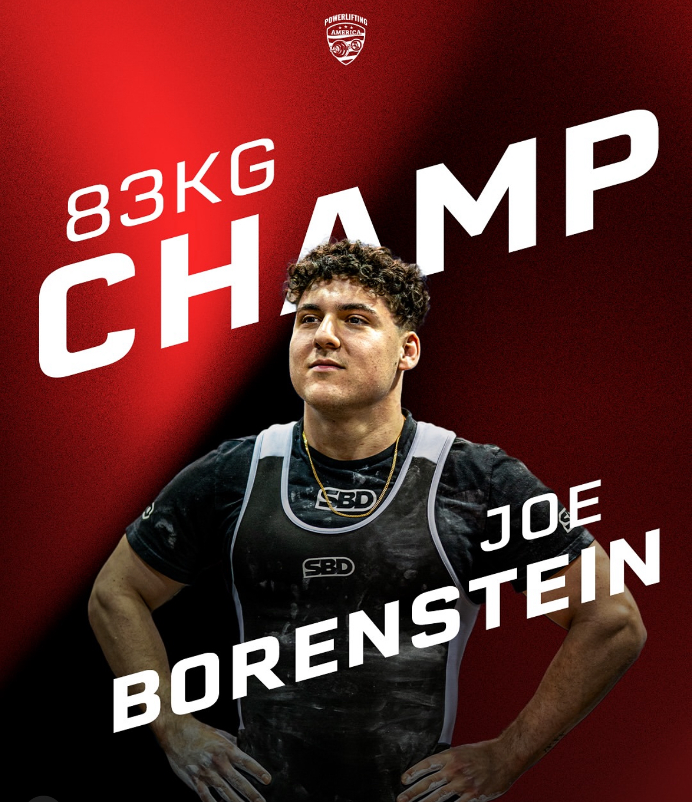

Joe Borenstein is a full-time powerlifting coach based in Orlando, FL. As an elite lifter, he holds multiple records — including the highest tested world-leading total in the 83kg weight class at 900kg. Joe also became the first ever 83kg athlete to total 900kg, a huge feat in powerlifting.
With a degree in Kinesiology from the University of Central Florida, Joe has been coaching since March 2022 under his brand Pound 4 Pound. His goal is not only to help athletes achieve their training objectives but also to teach and inform them about his training philosophies.
He prides himself on communication and building real relationships with his athletes, ensuring they reach their full powerlifting potential.